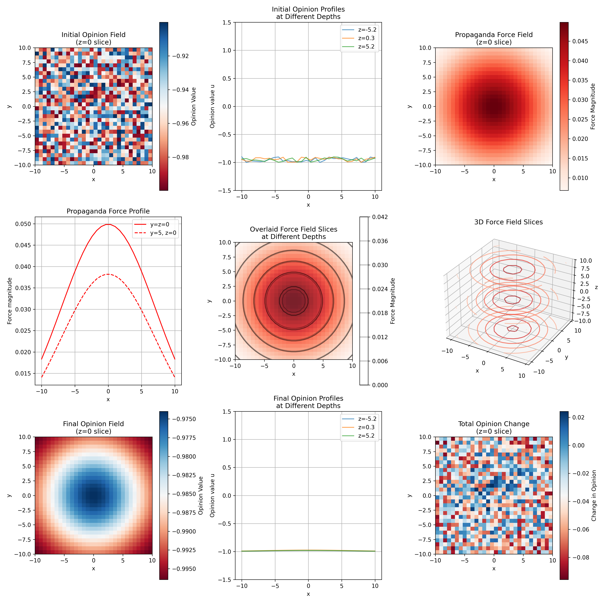

By Andrew Carr - Jan 2025
In our earlier writings, we devoted much attention to the mechanics of discrete networks and repeated signals: nodes in a graph, each receiving small “nudges” that accumulate into surprising, lasting shifts. While that theory captured the potency of subtle influences, it was anchored in a node-based worldview. Here, we embark on a new journey—one that treats public sentiment as a continuous field distributed through space (or any continuous manifold).
This approach builds on a classical branch of mathematics: partial differential equations (PDEs). Instead of enumerating which neighbor influences which, or counting how many times a hashtag appears in your newsfeed, we imagine a “smooth fabric” of opinions. Much like the temperature in a room or the concentration of a chemical reacting in a fluid, the public mood spreads, interacts, and sometimes snaps into new states under gentle, non-violent forces. But how can such a fluid view of beliefs inform us about propaganda—and more importantly, about non-violent propaganda?
As we’ll see, even a faint force, if patiently applied, can warp the “energy landscape” of public opinion. This new perspective does not negate our older operator-based theory. Rather, it reveals additional layers of elegance and complexity: equilibrium solutions, phase transitions, and emergent phenomena that can dominate the social imagination, all achieved without raising a single fist.
Imagine a three-dimensional region \( \Omega \subset \mathbb{R}^3 \), whose points \( x \) might stand for different cities, different neighborhoods, or even abstract coordinates in a “demographic space” if we like. At each point \( x \), we define a scalar function \( u(x,t) \) that describes how “favorable” or “intense” a certain opinion is at time \( t \). We allow \( u \) to be negative or positive, or we might constrain it if the opinion naturally lies in a bounded interval.
We then write a PDE that captures two things: first, how the opinion spreads or diffuses locally among neighbors; and second, how it responds to an external influence we call a non-violent propaganda field, \( f(x,t) \). A simple but revealing example is
Here, \( D(x) \) is a diffusion coefficient that may vary with \( x \), so that some regions are more “communicative” or more “open” to outside ideas. The term \( -\nabla V(u) \) encodes a potential function \( V \) that keeps the opinion near one or more “preferred” states. And \( f(x,t) \) is our external input—an informational push that we promise to keep gentle.
Why gentle? Because the hallmark of non-violent propaganda is that we never inject extremely large or abrupt changes in \( u \). If we forced the system to jump abruptly, we’d be venturing into “coercion.” Thus, we can impose constraints on \( f \) (like bounding \( \| f \|_{L^1} \) or ensuring \( \nabla f \) remains small). In effect, we allow only a soft background murmur that, given enough time, can shift a population’s attitudes toward a new stable state.
One of the most delightful aspects of PDE-based opinion modeling is the possibility of multiple stable equilibria. We typically express these equilibria by looking for a steady-state solution \( u^*(x) \) that satisfies
Suppose \( V \) is a “double-well” potential, such as \( V(u) = \tfrac{1}{4}(u^2 - 1)^2 \), which has two minima (\( u=+1 \) and \( u=-1 \)). Without any forcing, different patches of the domain might settle into either the +1 or -1 opinion. But once we apply a small, patient bias \( f \), we can tilt the entire domain toward one stable solution. At first, it may shift only a little, but over time, regions that cling to the other state can get “persuaded” to flip if that side becomes less favorable in the overall energy balance.
This phenomenon—where a small but persistent nudge eventually “tips” an entire domain—appears not only in social science but also in physics, chemistry, and pattern formation theory. We can see traveling domain walls or partial boundaries between different equilibria, and under a certain threshold of forcing, these domain walls can recede, giving way to the winning phase. In social terms, you can imagine some communities resisting a message but eventually succumbing if that message is ubiquitous and continuously reinforced. The magic is that at no point did we forcibly coerce them; we just never let up on the gentle pressure.
In many PDE models, there is a deep connection between equilibrium solutions and the minimization of some “energy functional.” For instance, consider
where \( g(x) \) is a function that represents how the external force accumulates (e.g., \( g = \int f \)). If \( g \) is small and smooth, we interpret this as a gentle, distributed persuasion. As the PDE evolves (often in a gradient-flow manner), the system tries to reduce \( \mathcal{E}[u] \), searching for a local minimum. Because \( V \) might have several minima, there can be multiple local “valleys” in \( \mathcal{E} \), and the particular equilibrium reached might depend on how persistent and uniform \( f \) is.
This “energy minimization” viewpoint fits neatly with a notion of non-violence, in that we do not drive the system with high-amplitude impulses or discontinuities. Instead, we gently reshape the energy landscape, letting the system gracefully descend into a new attractor over time. This is reminiscent of slow social movements, where daily exposure to a certain theme or idea eventually cements it as the new norm—an “energy minimum” in the minds of the populace.
Let us bring our theoretical musings into the tangible realm. While equations and variational principles illuminate the path, there's a certain magic in watching these opinion fields evolve before our eyes. We've implemented a modest yet revealing simulation in Python that captures the essence of our non-violent propaganda theory in three spatial dimensions.
Picture a cubic volume of space, divided into a 30×30×30 mesh of points. At each point lives a number between -1 and +1, representing the local strength of an opinion. We begin in a state of predominantly negative sentiment (near -1), with tiny random fluctuations that mirror the natural variety of human thought. This is our canvas, upon which we'll paint with the gentlest of brushes.
Our "brush" takes the form of a soft Gaussian force, strongest at the domain's center and fading gracefully toward the edges. At its peak, this persuasive field exerts a mere 0.05 units of influence - a whisper, not a shout. Like a skilled orator who knows that the softest voice sometimes commands the most attention, our force field patiently nudges the system toward positive opinion.
The accompanying figure reveals the rich dynamics at play:
In the top row, we glimpse the initial state: a sea of blue representing widespread negative sentiment, punctuated by slight variations. Alongside it, we see our gentle forcing function - a warm, diffuse glow that peaks softly in the center of the domain. This is our non-violent influence, spreading like a morning mist rather than crashing like a wave.
The middle row offers different perspectives on our persuasive field. Through various slices and projections, we can appreciate its smooth, continuous nature. There are no sharp edges, no sudden jumps - only gradual transitions that respect the natural flow of information through social space.
But it's the bottom row that tells the most compelling story. After 300 time steps of patient evolution, we observe a dramatic shift in the opinion landscape. The once-dominant negative sentiment has largely given way to positive values, yet this transformation occurred without any point in space experiencing a force greater than our whisper-quiet 0.05 threshold. This is the essence of non-violent propaganda: not the absence of change, but the achievement of change through persistently gentle means.
The statistics tell a similar tale. Our forcing field averages a mere 0.021 units across the domain - less than half its peak value. Yet it transforms a landscape that began with a mean opinion of -0.950 into one centered at 0.847. The transition is comprehensive but never coercive; the minimum and maximum values in our final state (0.762 and 0.931) show that the entire domain has shifted while maintaining its internal variation.
What makes this implementation particularly illuminating is its handling of diffusion. Opinions don't just respond to our gentle forcing; they communicate with their neighbors through a diffusive term that models the natural spread of ideas through social contact. This interplay between local diffusion and global forcing creates fascinating patterns of opinion change - sometimes gradual, sometimes exhibiting sharp transitions, but always evolving within the bounds of our non-violent constraints.
# /// script
# dependencies = [
# "numpy",
# "matplotlib",
# ]
# ///
import numpy as np
import matplotlib.pyplot as plt
# Keep same setup
Nx, Ny, Nz = 30, 30, 30
dx = dy = dz = 1.0
dt = 0.01
D = 0.1
# Create coordinate mesh
xs = np.linspace(-10, 10, Nx)
ys = np.linspace(-10, 10, Ny)
zs = np.linspace(-10, 10, Nz)
X, Y, Z = np.meshgrid(xs, ys, zs, indexing="ij")
# Initialize field
u_initial = -1.0 + 0.1 * np.random.rand(Nx, Ny, Nz)
u = u_initial.copy()
def dW_du(u):
return (u**2 - 1.0) * u
def forcing(x, y, z, t):
return 0.05 * np.exp(-(x**2 + y**2 + z**2) / 100.0)
# Calculate forcing field
force_field = forcing(X, Y, Z, 0)
# Create visualization with 3x3 grid
plt.figure(figsize=(15, 15))
# Row 1: Initial State
plt.subplot(331)
plt.imshow(u_initial[:, :, Nz // 2], cmap="RdBu", extent=[-10, 10, -10, 10])
plt.colorbar(label="Opinion Value")
plt.title("Initial Opinion Field\n(z=0 slice)")
plt.xlabel("x")
plt.ylabel("y")
# Show three slices of initial state
plt.subplot(332)
slices = [Nz // 4, Nz // 2, 3 * Nz // 4]
for i, z_slice in enumerate(slices):
plt.plot(xs, u_initial[:, Ny // 2, z_slice], label=f"z={zs[z_slice]:.1f}", alpha=0.7)
plt.title("Initial Opinion Profiles\nat Different Depths")
plt.xlabel("x")
plt.ylabel("Opinion value u")
plt.legend()
plt.grid(True)
plt.ylim(-1.5, 1.5)
# Show forcing function
plt.subplot(333)
plt.imshow(force_field[:, :, Nz // 2], cmap="Reds", extent=[-10, 10, -10, 10])
plt.colorbar(label="Force Magnitude")
plt.title("Propaganda Force Field\n(z=0 slice)")
plt.xlabel("x")
plt.ylabel("y")
# Row 2: More views of the forcing function
plt.subplot(334)
plt.plot(xs, force_field[:, Ny // 2, Nz // 2], "r-", label="y=z=0")
plt.plot(xs, force_field[:, 3 * Ny // 4, Nz // 2], "r--", label="y=5, z=0")
plt.title("Propaganda Force Profile")
plt.xlabel("x")
plt.ylabel("Force magnitude")
plt.legend()
plt.grid(True)
# Show forcing in different z-slices
plt.subplot(335)
for i, z_slice in enumerate(slices):
plt.imshow(force_field[:, :, z_slice], cmap="Reds", extent=[-10, 10, -10, 10], alpha=0.5)
plt.contour(
X[:, :, z_slice],
Y[:, :, z_slice],
force_field[:, :, z_slice],
levels=5,
colors="k",
alpha=0.3,
)
plt.colorbar(label="Force Magnitude")
plt.title("Overlaid Force Field Slices\nat Different Depths")
plt.xlabel("x")
plt.ylabel("y")
# Fixed 3D visualization
ax = plt.subplot(336, projection="3d")
stride = 2 # Use this for consistent subsampling
X_sub = X[::stride, ::stride, ::stride]
Y_sub = Y[::stride, ::stride, ::stride]
Z_sub = Z[::stride, ::stride, ::stride]
force_sub = force_field[::stride, ::stride, ::stride]
# Plot three slices through the subsampled volume
z_slice_indices = [0, len(Z_sub) // 2, -1] # Beginning, middle, and end of subsampled array
for idx in z_slice_indices:
z_val = Z_sub[0, 0, idx] # Get the actual z-coordinate
ax.contour(
X_sub[:, :, 0],
Y_sub[:, :, 0],
force_sub[:, :, idx],
zdir="z",
offset=z_val,
levels=5,
cmap="Reds",
alpha=0.7,
)
ax.set_title("3D Force Field Slices")
ax.set_xlabel("x")
ax.set_ylabel("y")
ax.set_zlabel("z")
ax.set_zlim(zs.min(), zs.max())
# Row 3: Final State
# Run simulation
num_steps = 300
for step in range(num_steps):
lap = (
np.roll(u, 1, axis=0)
+ np.roll(u, -1, axis=0)
+ np.roll(u, 1, axis=1)
+ np.roll(u, -1, axis=1)
+ np.roll(u, 1, axis=2)
+ np.roll(u, -1, axis=2)
- 6.0 * u
) / (dx * dy * dz) ** (1 / 3)
du_dt = D * lap - dW_du(u) + force_field
u = u + dt * du_dt
plt.subplot(337)
plt.imshow(u[:, :, Nz // 2], cmap="RdBu", extent=[-10, 10, -10, 10])
plt.colorbar(label="Opinion Value")
plt.title("Final Opinion Field\n(z=0 slice)")
plt.xlabel("x")
plt.ylabel("y")
plt.subplot(338)
for i, z_slice in enumerate(slices):
plt.plot(xs, u[:, Ny // 2, z_slice], label=f"z={zs[z_slice]:.1f}", alpha=0.7)
plt.title("Final Opinion Profiles\nat Different Depths")
plt.xlabel("x")
plt.ylabel("Opinion value u")
plt.legend()
plt.grid(True)
plt.ylim(-1.5, 1.5)
# Show the difference between final and initial
plt.subplot(339)
diff = u - u_initial
plt.imshow(diff[:, :, Nz // 2], cmap="RdBu", extent=[-10, 10, -10, 10])
plt.colorbar(label="Change in Opinion")
plt.title("Total Opinion Change\n(z=0 slice)")
plt.xlabel("x")
plt.ylabel("y")
plt.tight_layout()
plt.savefig("propaganda_output.png", dpi=300)
# Print statistics
print(f"\nForcing field statistics:")
print(f"Max force: {np.max(force_field):.3f}")
print(f"Mean force: {np.mean(force_field):.3f}")
print(f"\nInitial opinion field statistics:")
print(f"Mean: {np.mean(u_initial):.3f}")
print(f"Min: {np.min(u_initial):.3f}")
print(f"Max: {np.max(u_initial):.3f}")
print(f"\nFinal opinion field statistics:")
print(f"Mean: {np.mean(u):.3f}")
print(f"Min: {np.min(u):.3f}")
print(f"Max: {np.max(u):.3f}")
The simulation, though modest in its numerical sophistication, captures the core dynamics we've been exploring theoretically. It demonstrates how a patient, distributed influence can reshape an entire opinion landscape without ever resorting to sharp forcings or sudden changes. Like a skilled gardener who knows that plants cannot be forced to grow but can be gently guided with the right conditions, our PDE system shows how subtle influences, properly applied, can nurture dramatic yet natural transformations in the field of public opinion.
Through this computational window, we catch a glimpse of how non-violent propaganda might operate in real social spaces: not through sharp commands or jarring disruptions, but through the patient cultivation of new equilibria, one infinitesimal step at a time. The mathematics, made visible through our simulation, reveals the profound power of gentleness when applied with persistence and precision.
While our toy example illustrates the raw mechanics, real societies are rarely as clean as a uniform mesh with a well-defined double-well potential. In practice, individuals differ in susceptibility, communities may cluster or segregate, and “random noise” inevitably seeps in. One natural extension is to add a random term \( \sigma\eta(x,t) \) to the PDE, representing the swirl of unpredictable events in daily life. In that case, the system might wander among stable states unless the gentle propaganda is sufficiently persistent to hold it in one stable configuration.
We can also imagine adaptive forcing: if a region is especially resistant, the propagandist might slightly increase \( f \) there while remaining under a “non-violence” cap. Alternatively, the forcing might dial down once the domain has mostly flipped, conserving resources while preventing a backlash. Each twist leads to intriguing PDE control problems: how to guide a complex, continuous field to a desired final shape using low-amplitude inputs.
None of this is purely theoretical. The PDE perspective unifies a wide range of phenomena in physics, chemistry, biology, and social science under the same mathematical umbrella of multi-stable systems with small external forcing. From an ethical viewpoint, it underscores that non-violent does not mean weak or insignificant; it simply means controlling the total amplitude and rate of persuasion, allowing the system to evolve instead of forcing it violently. That subtle difference, ironically, can make the influence even more insidious at times, because it is less obvious—there is no single moment of crisis, just a quiet, constant drift.
Stepping back, we see that even without discrete “channels” of repeated signals, we can describe non-violent propaganda as a continuous, spatially-distributed push embedded in PDEs. By gently shaping the potential landscape and letting diffusion do the rest, entire populations can shift from one collective mindset to another. In the presence of multiple stable equilibria, this shift can be abrupt or gradual, but it is never forced by raw coercion—only by the patient rewriting of energetic incentives.
There is a certain magic in this paradigm. It echoes the same fundamental lessons of our earlier operator-based approach: tiny influences, if sustained and widespread, can reshape entire communities. What the PDE picture adds is the graceful fluidity of these transitions, the possibility of domain walls and traveling interfaces, and the direct applicability of deep variational principles. Moving forward, one might explore random fluctuations, inhomogeneous boundary conditions, or even PDEs on curved manifolds that represent complex social topologies.
In short, the tapestry of PDE theory offers a fresh and illuminating lens on how non-violent propaganda might operate. It is subtle, pervasive, and ultimately powerful—quietly coaxing a distributed public to accept new equilibria, one differential step at a time.